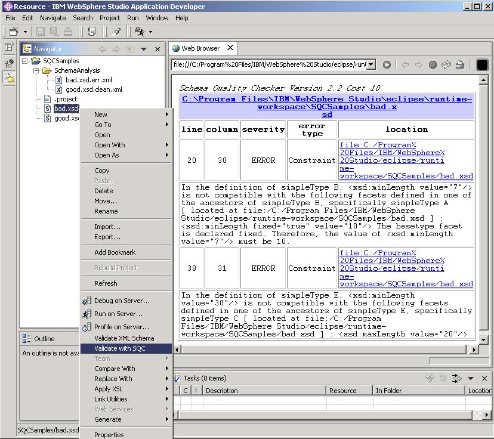

<!DOCTYPE HTML PUBLIC "-//W3C//DTD HTML 4.01 Frameset//EN"
   "http://www.w3.org/TR/html4/frameset.dtd">
<HTML>
<HEAD>
<TITLE>SchemaQualityChecker</TITLE>
<META name="GENERATOR" content="IBM WebSphere Studio">
</HEAD>
<FRAMESET cols="200, *">
  <FRAME src="doc/contents.html" name="contents" frameborder="1">
  <FRAME src="doc/index.html" frameborder="0" name="main">
  
  <NOFRAMES>
     	<h1>SchemaQualityChecker (SQC) and QualityChecker API</h1>
     	<p>(IBM Version 2.2 - W3C XML Schema Recommendation May 2, 2001)</p>
     	<ul>
		<li><a href="doc/introduction.htm">Introduction</a></li>
		<li><a href="doc/setup.htm">Setup</a></li>
		<li><a href="doc/usage.htm">Usage</a></li>
		<li><a href="doc/error.htm">Error Codes and Error Types</a></li>
		<li><a href="QualityCheckerAPI/index.html">QualityChecker (QC) API</a></li>
		<li><a href="doc/appendix.htm">Appendix</a></li>
    	</ul>
	<center></center>
	<p>Licensed Materials &#151; Property of IBM &copy; Copyright IBM Corp. 2000,
2002 All Rights Reserved.<br>
US Government Users Restricted Rights &#151; Use, duplication or disclosure
restricted by GSA ADP Schedule Contract with IBM Corp.
<hr> July 15, 2003 10:48 am ET</p>
  </NOFRAMES>
</FRAMESET>
</HTML>

